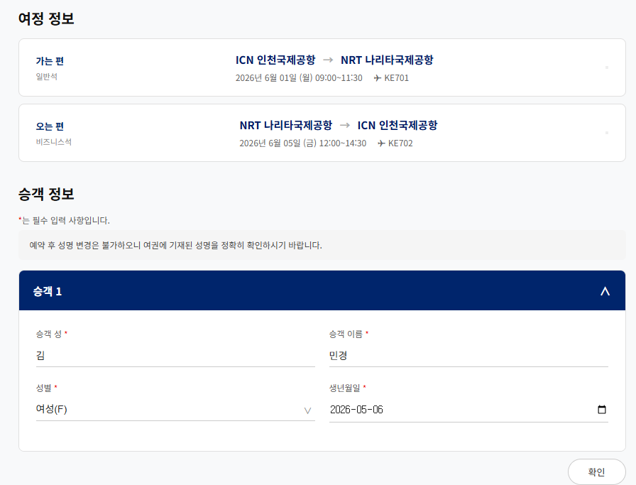
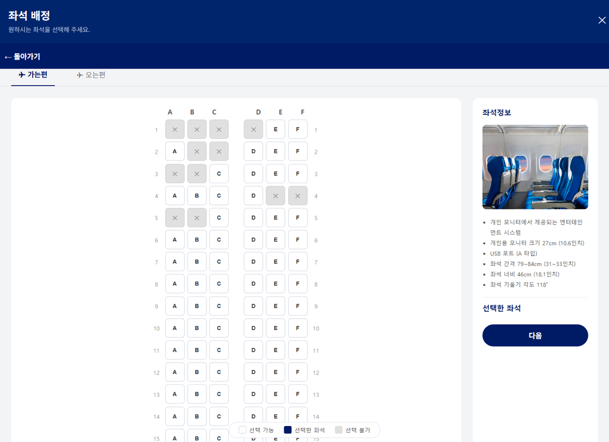
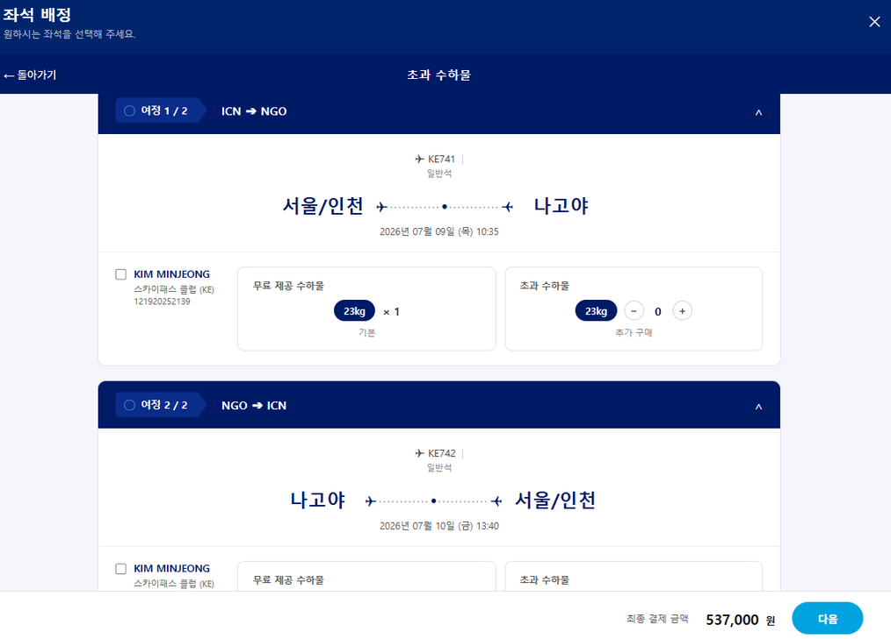
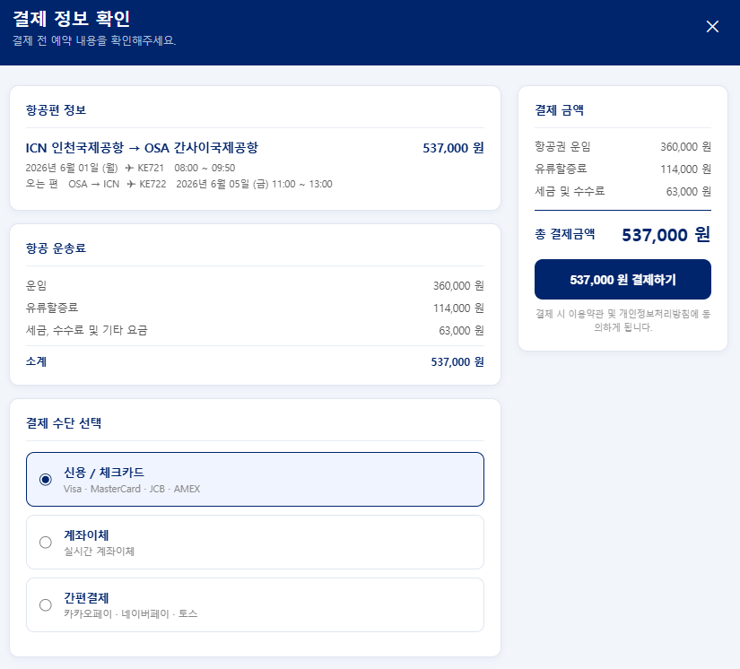

1. 승객정보 입력
승객 수(passCnt)에 따라 입력 폼을 동적으로 생성하고, 연락처 정보를 세션에 저장합니다.
PassengerServlet · passenger_info.jsp/js/css
Acorn Academy 팀 프로젝트 (2026.04.28 ~ 05.14)
대한항공 웹사이트를 레퍼런스로 만든 항공권 예약 시스템.
검색부터 좌석 선택, 결제, 예약 조회까지 이어지는 흐름을 5인 팀이 구현했습니다.
항공편 검색 → 좌석 선택 → 결제 → 예약 조회로 이어지는 항공 예약 시스템을 Java/JSP/Servlet + Oracle DB로 구현했습니다. 아키텍처는 MVC 패턴(Controller - Service - DAO)을 따랐고, 팀 5명(장윤성, 고지연, 여도현, 김민정, 김민경)이 함께 만들었습니다.
예약 후반부 흐름인 승객정보 입력 → 좌석 배정 → 추가 수하물 → 결제 구간을 구현했습니다.

승객 수(passCnt)에 따라 입력 폼을 동적으로 생성하고, 연락처 정보를 세션에 저장합니다.
PassengerServlet · passenger_info.jsp/js/css

가는편/오는편 좌석을 선택하고, 이미 예약된 좌석은 비활성화합니다. 승객 수와 선택 좌석 수를 검증합니다.
SeatServlet · seatSelect.jsp/css

수하물 개수별 추가 요금을 계산해 예약 정보에 반영합니다.
BaggageServlet · baggage.jsp

결제 시점에 예약·승객·좌석·수하물 데이터를 트랜잭션으로 일괄 저장합니다.
PaymentServlet · PaymentService · payment.jsp
Java, Servlet, JSP (MVC 패턴)
Oracle — TB_USER, TB_FLIGHT, TB_AIRPORT, TB_BOOKING, TB_PASSENGER, TB_SEAT, TB_BAGGAGE, CHATBOT_DATA (8개 테이블)
HTML, CSS, JavaScript — 모달/iframe 단계 전환 + postMessage 통신
Git feature/fix 브랜치 전략, PR 리뷰·머지, 79건 커밋